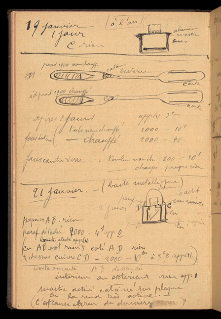
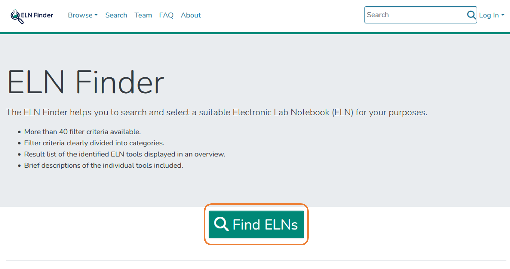
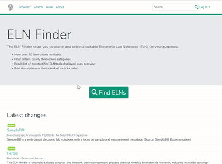

2.1 Introduction to Electronic Lab Notebooks
The content in this section is adapted from RDM@KIT.
For planning, conducting and analyzing research experiments, electronic laboratory notebooks are becoming more and more common, thus contributing to the digitization of research.
Laboratory notebooks play an important role in the planning, conducting and analysis of (natural) scientific experiments. Lab books are traditionally analogue and paper-based, an approach that is no longer up-to-date, as research data is primarily available in digital form. The solution are electronic laboratory notebooks (ELNs). These offer significant advantages. They can be linked directly to laboratory devices, analysis software or storage systems, making results more reproducible and research more efficient.
There is now a whole range of ELNs adapted to the various needs of different scientific disciplines. Two of them are Chemotion ELN and Kadi4Mat, both are developed at KIT. More information on these two ELNs can be found at the section "Services & Tools".
For assistance on selecting and implementing an ELN, please refer to the ELN Guide and the ELN Finder. Further information can be found at forschungsdaten.org.
Syllabus Elements
Learning Objectives
At the end of the section the learners can ...
- Describe what an electronic lab notebook is
- Give examples of electronic lab notebooks
- Explain advantages of an electronic lab notebook compared to a paper-based lab notebook
- Select a electronic lab notebook that fits their needs
Target Audience
- attendees of this course
Duration
- 20 minutes
Prerequisites
Learning Tools
Learning Content Topic
What is a laboratory notebook?
- Laboratory notebooks are used to document, conduct and analyze scientific experiments and research data generated during the process
- They are primarily used in natural sciences
-
Using them is part of „Good research practise“: “Continuous quality assurance during the research process includes (…) the keeping of laboratory notebooks.“
-
Notebook, no loose sheets of paper
How is it structured:
- Table of content
- Numbering of pages
- Records by days
- Experimental planning and conducting
- Recording results and measured data
Important:
- Permanent ink
- Should be written during or directly following an experiment
- Stays in the lab or institute
A laboratory notebook is a legal document to prove your scientific work.
Disadvantages of lab notebooks
- Experiments and results must be recorded manually
- Tables, graphs and analysis are available in digital form, but must be in the lab notebook, so they are often printed out and pasted in
- Is it readable and understandable for everyone?
- You can't access your lab notebook yourself, because it is in the institute
Famous negative example: Marie Curie‘s laboratory notebook

Marie Curie (1867-1934) Public Domain from Wikipedia.
.jpg){kind=link}
- After more than 100 years, many of Marie Curie's personal items, including her laboratory notes, are still radioactive
- Curie's laboratory notes, are stored in lead-lined boxes at the French Bibliotheque National in Paris.
- Radioactive half life of Radium t½(226Ra) ≈ 1602 a

Lab Notebook of Marie Curie Public Domain from Wellcome Collection.
Source:
- Bryson (2003): A Short History of Nearly Everything. New York, NY: Broadway Books.
- Tasch (2015): Marie Curie's Belongings Will Be Radioactive For Another 1,500 Years
The solution: Electronic Laboratory Notebooks (ELNs)
The content in this section is adapted from ELN Finder
An electronic lab notebook (ELN) is a specialized software for:
- the structured description of an experiment, i.e. keeping records of
- the procedure
- the used materials and instruments
- the observations made during the experiment (incl. photos)
- the metadata/description of the data generated in the experiment and, if applicable, the files (or links to them) and inferences related to it
- the long term preservation and access of all this information in compliance with long-term archival criteria
Advantages of ELNs
The content in this section is adapted from ZB MED.
Boost efficiency of everyday tasks:
- Create, reuse and share templates for logs, processes and workflows
- Save time by taking advantage of standardisation
- Use search features and filters
- Log measurement results automatically
- Lab notebooks can be accessed from anywhere and at any time
Make research findings traceable and verifiable:
- Avoid switching between multiple media (e.g. between handwritten and digital entries)
- Avoid the loss of information caused by illegible entries
- Structure and visualise processes and workflows
- Use search and filter functions
- Easily create backups
- Version control and authenticating evidence
- Boost quality of data through improved consistency and standardisation of entries
Provide a means of preparing research data for publication and digital preservation
- Support in creating metadata
- Direct links to research data repositories, data services and publishing platforms
Connected digital research environment:
- Import and export functions
- Seamless interfaces to other programs
- API for integration into existing software environment
- Measuring instruments can deliver their data directly to the electronic lab notebook
- Collaboration through sharing research data, process logs, workflows
- Enables researchers to take their research work with them if they move to a different institute
What is the difference between ELN and LIMS?
- Electronic Lab Notebook (ELN): Used to plan experiments, record data, offer features that cover project, inventory, and laboratory management processes, more often used in research context as it is more flexible (Kranjc 2021)
- Laboratory Information Management System (LIMS): Especially used in routine laboratories (e.g. diagnostic laboratories), sample-centred (Kranjc 2021)
- Please note that ELN and LIMS can be connected, if both support this integration.
Examples of ELNs
- Chemotion/LabIMotion (Open Source)
- Kadi4Mat (Open Source)
- eLabFTW (Open Source)
- Labfolder (commercial)
- openBIS (Open Source)
- Rspace ELN (commercial)
- SciNote (Open Source)
- Labcollector (commercial)
- ...
For some of these ELNs demo instances are available, just have a look on the web pages.
@KIT: For example you can find demo instances hosted at KIT.
How do I decide which ELN fits me?
ELN-Guide
The content in this section is adapted from the ELN-Guide by ZB MED licenced under a CC BY 4.0 licence.
More and more laboratories are replacing their paper lab notebooks with electronic laboratory notebooks, or ELNs. But this transition is about more than just replacing paper with digital alternatives. It’s also about finding ways to integrate electronic lab notebooks into an overarching digital research data management (RDM) system.
The ELN-Guide provides:
- Requirements for an Electronic Lab Notebook
- Procedure for the introduction of an ELN
- Best-Practice-Examples
- Toolboxes for needs assessment
ELN Finder
The content in this section is adapted from ELN Finder.
The ELN Finder helps you to search and select a suitable Electronic Lab Notebook (ELN) for your purposes. The ELN Finder uses the following metadata schema.
Hands on: ELN Finder
- Go to the website: https://eln-finder.ulb.tu-darmstadt.de/home
- Click on „
Find ELNs“ - Search for an ELN that fits your needs using the filter criteria, e.g.
LicenseorSubject.



Summary
- Documentation of research processes and results is important
- One tool for this is the electronic laboratory notebook (ELN)
- ELNs have many advantages over the classic laboratory notebook, and can be fully implemented in the research data management process
- There are different categories and providers of ELNs, therefore it can be helpful to use one of the presented tools to select the right ELN
- At KIT two ELNs have been developed (Chemotion and Kadi4Mat), both can be used for your own research
Suggested Reading
- Higgins et al. (2022): Considerations for implementing electronic laboratory notebooks in an academic research environment. Nature protocols 17 (2), 179–189. https://doi.org/10.1038/s41596-021-00645-8.
- ZB MED – Information Centre for Life Sciences (2021): ELN Guide. Electronic laboratory notebooks in the context of research data management and good research practice – a guide for the life sciences. https://doi.org/10.4126/FRL01-006425772.
- Baker (2021): Five keys to writing a reproducible lab protocol. Nature 597 (7875), 293–294. https://doi.org/10.1038/d41586-021-02428-3.
- Kranjc (2021): Introduction to Laboratory Software Solutions and Differences Between Them. Wiley, p. 75–84. https://doi.org/10.1002/9783527825042.ch3
- Nussbeck et al. (2014): The laboratory notebook in the 21st century: The electronic laboratory notebook would enhance good scientific practice and increase research productivity. EMBO reports 15 (6), p. 631–634. https://doi.org/10.15252/embr.201338358.